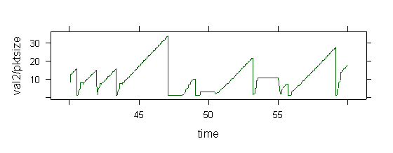
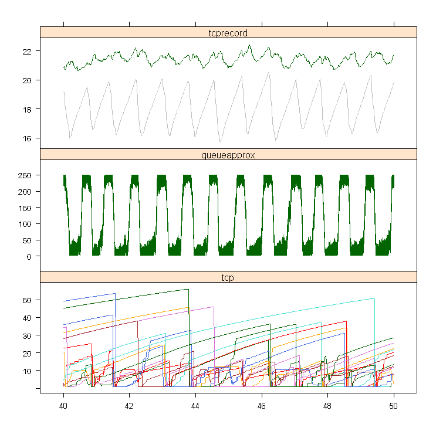

R is a free open-source statistics package with excellent data-handling and visualisation routines [download R].
The code to import a trace into R: readdata.R.
source('readdata.R')
res <- parseTrace("log.dat")
pktsize <- attr(res,'pktsize')
xyplot(val2/pktsize~time,
data=res, subset = type=='tcp' & id=='tcp%1',
type='l')

A more advanced plot, using extra visualisation routines in utils.R:
library('lattice')
trellis.par.set(col.whitebg())
source('readdata.R')
source('utils.R')
res <- parseTrace("log.dat")
pktsize <- attr(res,'pktsize')
servperflow <- attr(res,'bottleneckrate')/attr(res,'numflows')
rescale <- res$type %in% c('queueapprox','tcp','tcprecord')
res$val1[rescale] <- res$val1[rescale]/pktsize
res$val2[rescale] <- res$val2[rescale]/pktsize
res$val3[rescale] <- res$val3[rescale]/pktsize
xyplot(val1~time | type,
z=res$val2, zz=res$val3,
ev=res$ev, objtype=res$type, objid=res$id,
data=res, subset= (type=='tcp' | type=='tcprecord' |
type=='queueapprox') & (id!='ratelim%1') &
time>40 & time<50,
panel=panel.obj, prepanel = prepanel.obj,
layout=c(1,3),
xlab='',ylab='',
scales=list(y=list(relation='free',rot=1.1)),
type='d'
)
